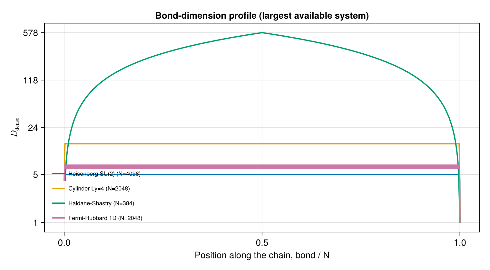

Ladders and cylinders
An MPO lives on a chain, so a two-dimensional lattice has to be flattened into one. This page builds the SU(2) Heisenberg antiferromagnet on two-leg ladders and on $L_x \times L_y$ cylinders, and measures how the bond dimension responds.
The result is the one that governs the cost of cylinder DMRG: the bond dimension is set by the circumference, not the length. For the nearest-neighbour Heisenberg cylinder it is exactly
\[D_\mathrm{dense} = 3 L_y + 2 ,\]
independent of $L_x$.
using OpSum: OpSum
include(joinpath(pkgdir(OpSum), "examples", "common.jl"))Main.hermiticity_errorOrdering the lattice
We use column-major ordering, $(x, y) \mapsto (x-1) L_y + y$, with $x$ running along the cylinder and $y$ around it. Each rung is then contiguous in the chain, and every bond spans at most $L_y$ sites. That bounded span is precisely what keeps the bond dimension finite.
cylinder_bonds emits nearest-neighbour bonds with the smaller linear index first, because couple is strictly left-to-right.
cylinder_bonds(3, 3)15-element Vector{Tuple{Int64, Int64}}:
(1, 2)
(1, 4)
(2, 3)
(2, 5)
(1, 3)
(3, 6)
(4, 5)
(4, 7)
(5, 6)
(5, 8)
(4, 6)
(6, 9)
(7, 8)
(8, 9)
(7, 9)A cylinder is periodic around $y$; a ladder is the same construction with open boundaries. (For $L_y = 2$ the periodic wrap would emit the single rung twice and silently double its coupling, so cylinder_bonds drops it and says so.)
ladder_bonds(3, 2)7-element Vector{Tuple{Int64, Int64}}:
(1, 2)
(1, 3)
(2, 4)
(3, 4)
(3, 5)
(4, 6)
(5, 6)The Hamiltonian
\[H = J \sum_{\langle i j \rangle} \vec{S}_i \cdot \vec{S}_j\]
summed over the bonds of the chosen geometry. Because every bond is a plain SU(2) scalar product, the geometry is the only thing that changes between one and two dimensions.
V = SU2Space(1 // 2 => 1)
S = spin(V)
function heisenberg_bonds(bonds; J = 1.0)
return sum([J * dot(S[i], S[j]) for (i, j) in bonds])
end
heisenberg_cylinder(Lx, Ly; kwargs...) = heisenberg_bonds(cylinder_bonds(Lx, Ly); kwargs...)
heisenberg_ladder(Lx, Ly = 2; kwargs...) = heisenberg_bonds(ladder_bonds(Lx, Ly); kwargs...)heisenberg_ladder (generic function with 2 methods)A two-leg ladder
Lx = 6
H_ladder = heisenberg_ladder(Lx)
sites_ladder = fill(V, 2Lx)
res_ladder = build("ladder 6x2", H_ladder, sites_ladder)
islossless(H_ladder, sites_ladder)trueThe smallest non-trivial case, a single $2 \times 2$ plaquette, is small enough to check against the dense operator directly:
mpo_matches_oracle(heisenberg_cylinder(2, 2), fill(V, 4))trueCylinders: growth in the circumference
Sweeping the circumference at fixed length shows a clean linear law. Each extra ring of the cylinder adds one more leg bond that can straddle a cut, and each open bond carries a spin-1 multiplet of quantum dimension 3 — hence $3 L_y + 2$, the $+2$ being the identity-in and identity-out channels.
for Ly in 3:6
r = build("cylinder 4x$Ly", heisenberg_cylinder(4, Ly), fill(V, 4Ly); quiet = true)
println(" Ly=$Ly D=$(rpad(r.D, 3)) D_dense=$(rpad(r.Ddense, 4)) 3Ly+2 = $(3Ly + 2)")
end Ly=3 D=5 D_dense=11 3Ly+2 = 11
Ly=4 D=6 D_dense=14 3Ly+2 = 14
Ly=5 D=7 D_dense=17 3Ly+2 = 17
Ly=6 D=8 D_dense=20 3Ly+2 = 20... and independence from the length
Stretching the cylinder at fixed circumference changes nothing. This is the whole reason cylinder DMRG is feasible: cost is exponential in circumference but only linear in length.
for Ly in (3, 4)
for Lx in (3, 4, 6, 8)
r = build("cyl", heisenberg_cylinder(Lx, Ly), fill(V, Lx * Ly); quiet = true)
println(" Ly=$Ly Lx=$(rpad(Lx, 2)) N=$(rpad(Lx * Ly, 3)) D_dense=$(r.Ddense)")
end
end Ly=3 Lx=3 N=9 D_dense=11
Ly=3 Lx=4 N=12 D_dense=11
Ly=3 Lx=6 N=18 D_dense=11
Ly=3 Lx=8 N=24 D_dense=11
Ly=4 Lx=3 N=12 D_dense=14
Ly=4 Lx=4 N=16 D_dense=14
Ly=4 Lx=6 N=24 D_dense=14
Ly=4 Lx=8 N=32 D_dense=14Stated as an assertion over the whole grid:
all(
build("c", heisenberg_cylinder(Lx, Ly), fill(V, Lx * Ly); quiet = true).Ddense == 3Ly + 2
for Ly in 3:6, Lx in (3, 4, 5)
)trueSymmetry reduction
The reduced bond dimension — the number of symmetry-resolved indices, and the quantity a DMRG sweep actually pays for — is $L_y + 2$: one index per open spin-1 multiplet plus the two identity channels. Imposing SU(2) therefore shrinks the bond by roughly a factor of three relative to a symmetry-agnostic MPO of the same operator.
map(3:6) do Ly
r = build("c", heisenberg_cylinder(4, Ly), fill(V, 4Ly); quiet = true)
return (Ly = Ly, reduced = r.D, dense = r.Ddense, ratio = round(r.Ddense / r.D; digits = 2))
end4-element Vector{@NamedTuple{Ly::Int64, reduced::Int64, dense::Int64, ratio::Float64}}:
(Ly = 3, reduced = 5, dense = 11, ratio = 2.2)
(Ly = 4, reduced = 6, dense = 14, ratio = 2.33)
(Ly = 5, reduced = 7, dense = 17, ratio = 2.43)
(Ly = 6, reduced = 8, dense = 20, ratio = 2.5)Scaling
julia --project=benchmark scripts/plot_benchmarks.jl --run --sweep full
Along the chain the bond dimension rises over the first $L_y$ sites — the length of one ring — and then sits on a flat plateau however long the cylinder is:

This page was generated using Literate.jl.